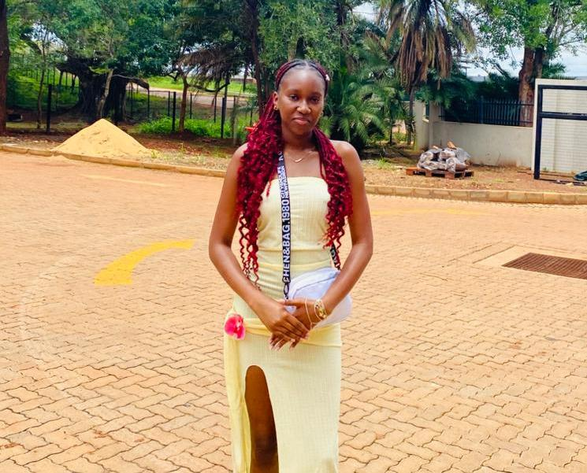
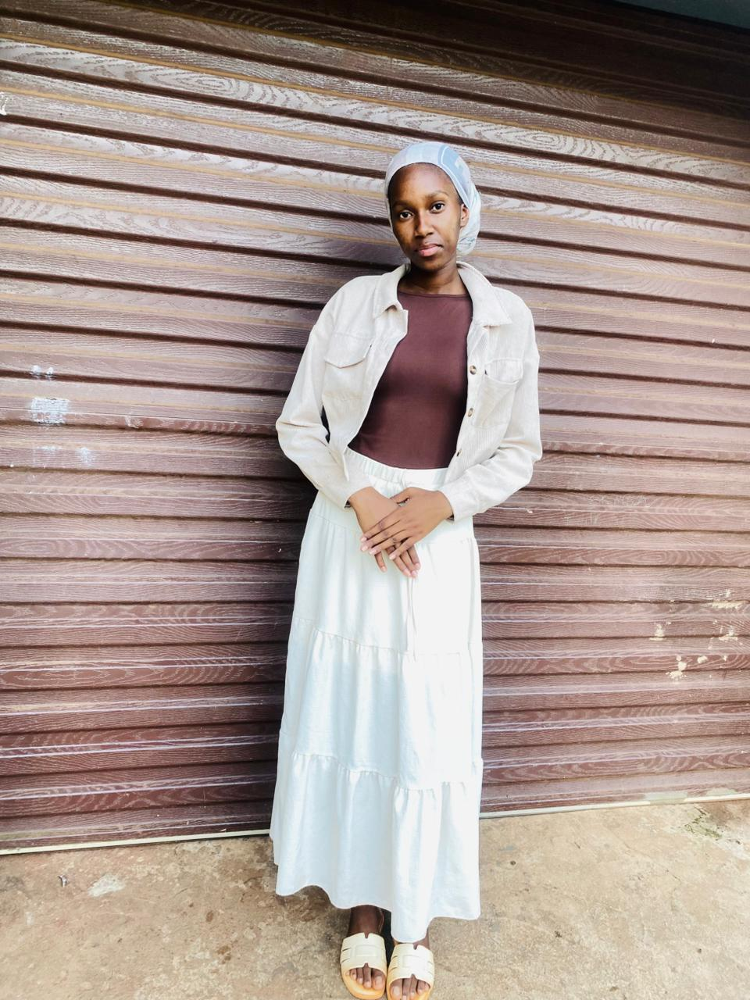

Education & journey

👩🏽💻 Mudzanani Mutshinye Rainah — BSc Computer Science at the University of Venda. Second‑year student with a clear vision: to become a staff‑level software engineer leading architectural design for large‑scale distributed systems.
Coursework: Data Structures, Web Dev, Software Engineering, Databases, Distributed Systems.
✨ Career goal: Staff‑level software engineer — leading architectural design, mentoring juniors, and aligning technical decisions with business impact.
🌱 Currently strengthening system design, cloud patterns, and backend scalability. Active in study groups and peer mentoring.
tech stack
Focus: scalable architecture, clean code, and building systems that empower teams.
featured projects
Simple Calculator
A clean, responsive calculator that handles basic arithmetic. Built with vanilla JavaScript, CSS Grid, and keyboard support. Deployed live.
Guessing Game in progress
An interactive number‑guessing game with hints, score tracking, and difficulty levels. Smooth UI/UX with local storage.
More experiments on GitHub
connect with Me
Let's build something meaningful
Email, WhatsApp, or request my CV — I'm just a message away.
University of Venda · Thohoyandou, Limpopo